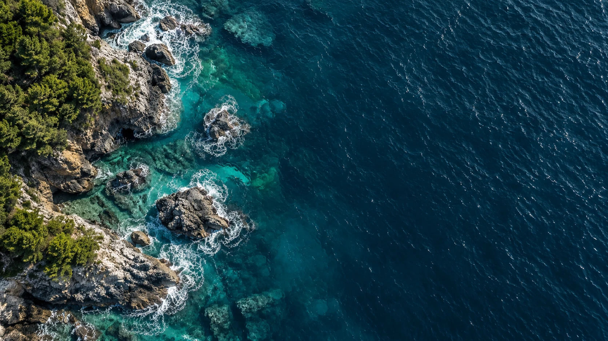
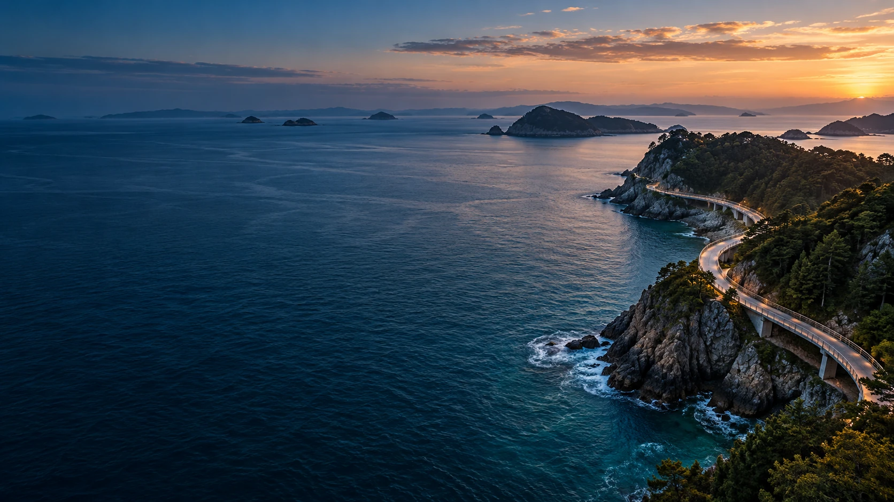
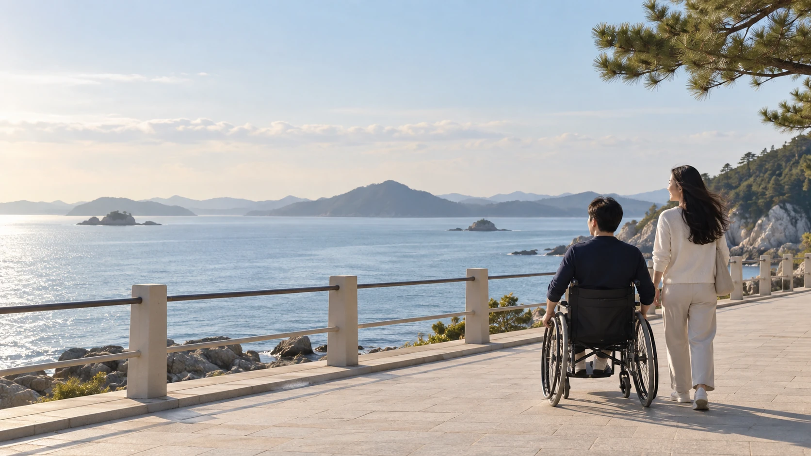
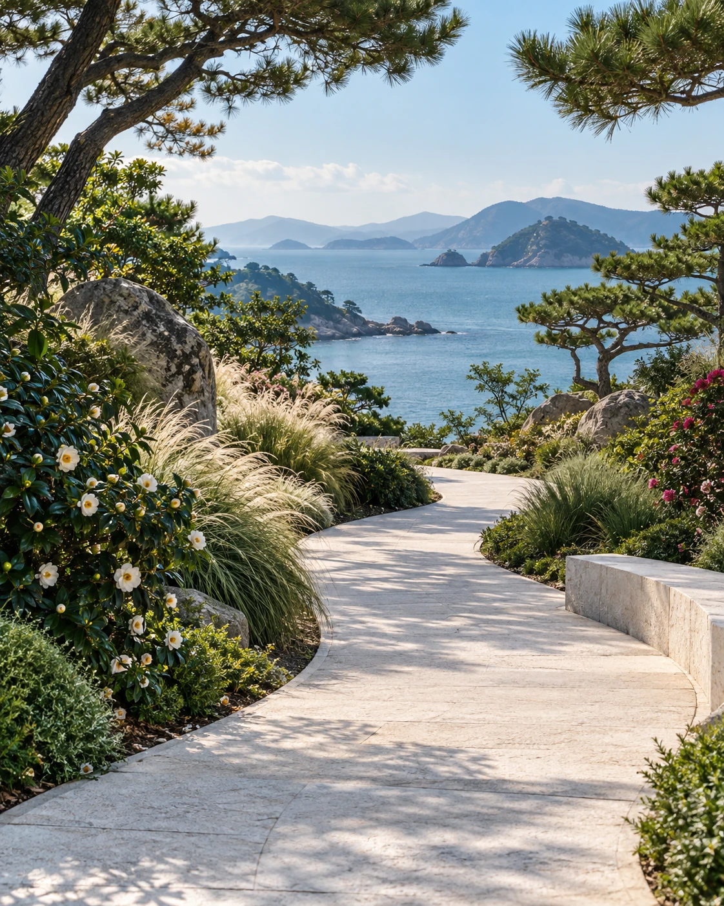
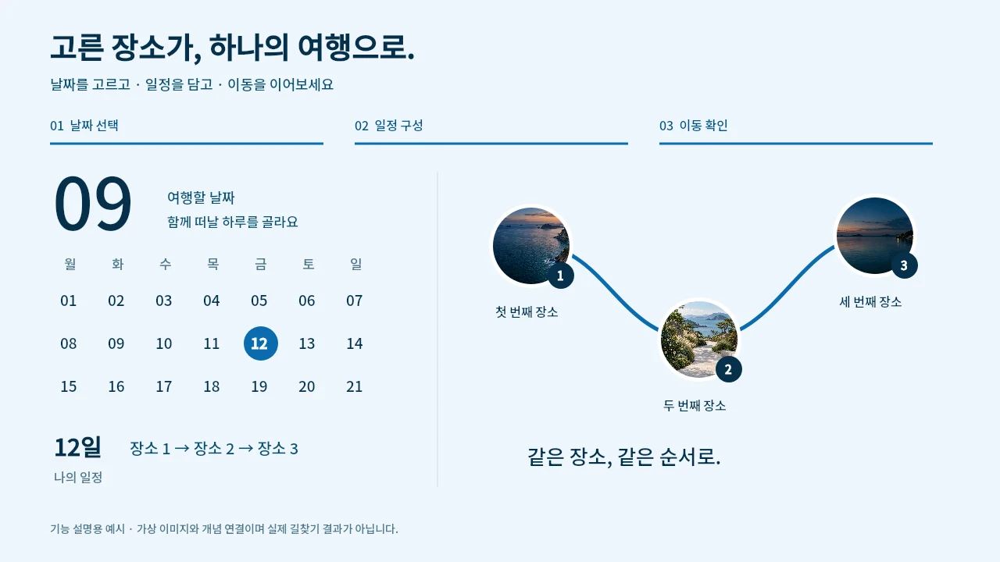
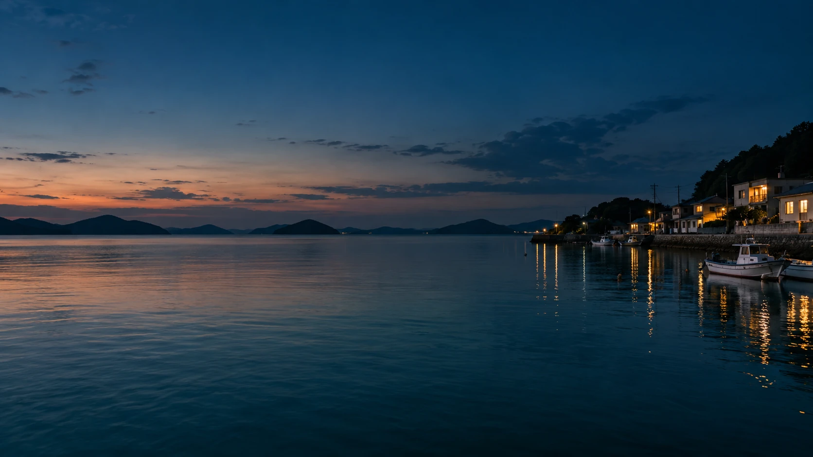

여행의 가능성을 넓히다
가고 싶은 마음이
여행이 되도록.

더 넓은 세상으로.
나에게 맞는 방법으로.
필요한 편의부터 차근차근 확인하고
나만의 여행을 준비해 보세요.

01 · 필요한 편의
휠체어 이동, 걷기 부담, 영유아 동반.
지금 내 여행에 필요한 조건부터 고르세요.


03 · 일정과 이동
날짜를 고르고, 장소를 담고,
이동까지 한 흐름으로 준비하세요.
날짜와 일정, 이동 연결을 보여주는 기능 설명용 예시입니다.

기능 설명용 예시입니다. 실제 여행지·경로 정보는 여행 플래너에서 확인하세요.
여행을 서두르지 않아도 괜찮아요
움직이는 바다를 잠시 만나보세요.
